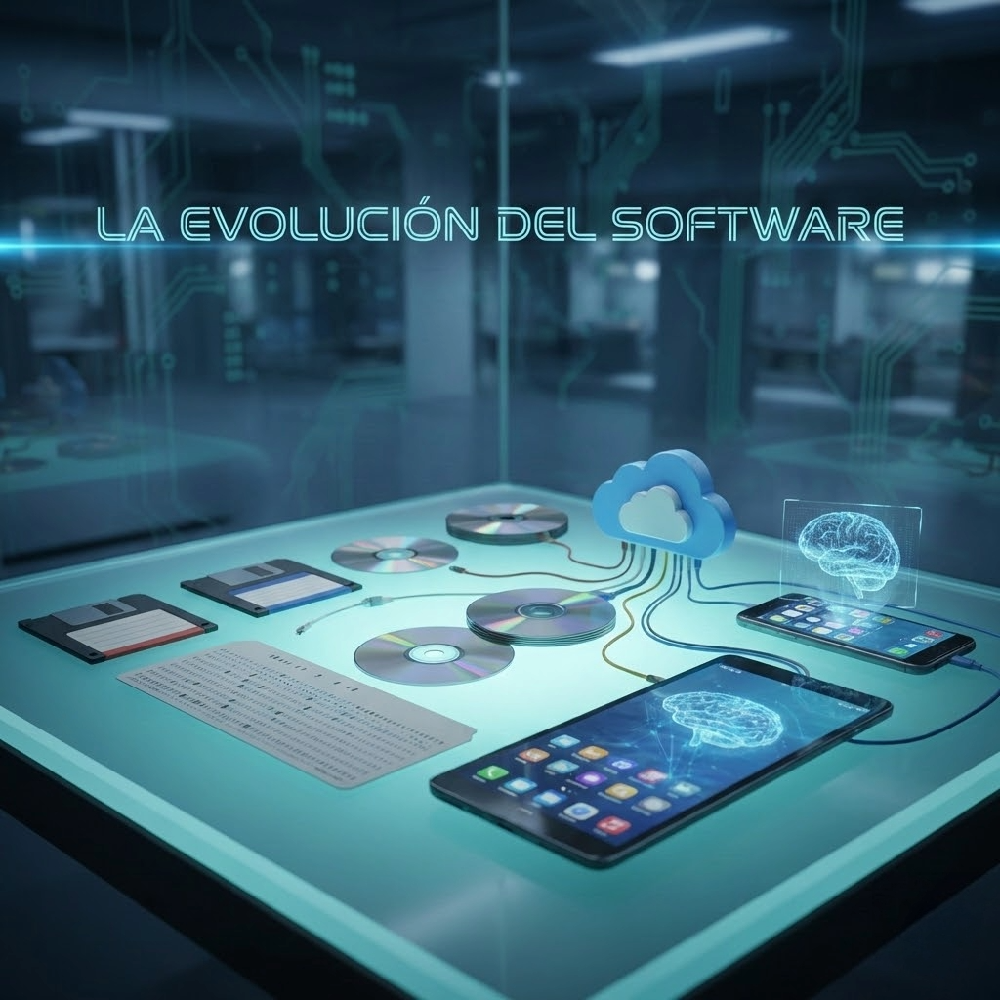

If hardware is the body of computing, software is its soul: the dynamic, expressive layer that gives physical machines purpose and behavior. Software enables abstraction—the ability to describe complex outcomes without manually controlling every electrical event. That abstraction transformed computation from a specialized engineering discipline into a universal medium for science, communication, business, and creativity.
Introduction: Software as the Soul of the Machine and Abstraction
Software evolved as a response to one central challenge: humans needed reliable ways to command machines at increasing levels of complexity. Early computers were powerful but rigid, requiring close alignment between human intention and machine-level operations. Over time, software frameworks introduced progressively richer abstractions—symbolic instructions, reusable functions, modules, operating systems, and distributed services. Each layer reduced cognitive overhead while expanding what teams could build.
In modern engineering, abstraction is not merely a convenience; it is a strategic multiplier. Developers can model financial systems, genomic pipelines, logistics networks, and immersive interactive environments because software hides lower-level implementation details behind stable interfaces. This model enables collaboration across disciplines: data scientists, designers, product managers, and system architects can contribute to shared outcomes without mastering every hardware-level detail.
The Dawn of Logic: From Punch Cards to Assembly Language

The earliest software workflows were deeply physical. Instructions were encoded in punch cards, where specific hole patterns represented machine actions and data paths. This process was revolutionary for its time, but it imposed severe constraints: editing was slow, errors were expensive, and iteration cycles could consume entire shifts. Still, punch-card systems proved a foundational idea that persists today—programs are formal logic artifacts that can be stored, executed, audited, and improved over time.
Assembly language introduced a major shift by replacing raw binary manipulation with mnemonic instructions and symbolic labels. Programmers could reason about operations with greater clarity, yet they still worked close to hardware realities such as registers, memory addresses, and instruction timing. This era trained a generation of engineers to think rigorously about control flow and efficiency, practices that continue to influence systems programming and performance engineering.
Intellectual pioneers shaped this transition long before modern toolchains existed. Ada Lovelace, for example, articulated that computational devices could manipulate symbols beyond arithmetic, foreshadowing modern concepts of programmability and general-purpose logic. Her perspective helped establish software as an independent intellectual discipline rather than a byproduct of hardware, paving the way for formal languages, algorithmic thinking, and software engineering as we know it.
High-Level Languages: How Compilers Redefined the Industry
High-level languages transformed software from specialist craftsmanship into scalable industrial capability. Languages such as FORTRAN, COBOL, C, and later Java, Python, and many others let developers express intent in domain-relevant structures rather than processor-specific sequences. This reduced dependence on hardware idiosyncrasies, improved portability, and allowed teams to focus on architecture, business logic, and user value.
Compilers were the decisive engine behind this transformation. A compiler translates high-level source code into optimized machine instructions, balancing correctness, execution performance, and memory behavior. As compiler research matured, optimizations such as inlining, dead-code elimination, register allocation, and loop vectorization enabled high-level code to achieve performance levels that approached hand-tuned low-level implementations for many workloads.
Beyond speed, compilers professionalized software production. Type systems, diagnostics, static analysis, and reproducible build chains improved reliability and reduced operational risk. This allowed organizations to scale engineering teams, shorten release cycles, and maintain complex systems over long horizons. In practical terms, compilers turned programming languages into strategic infrastructure, enabling innovation at global scale across finance, healthcare, education, logistics, and media.
The Modern Era: SaaS, Cloud Computing, and Open Source
Contemporary software is increasingly delivered as a service. Software as a Service (SaaS) shifted applications from one-time local installations to continuously updated online platforms. This model improved accessibility for users while giving providers rapid deployment loops, telemetry-driven decisions, and sustainable subscription economics. Product evolution became a continuous process instead of an occasional release event.
Cloud computing extended this paradigm through elastic infrastructure, global distribution, and managed platforms. Engineering teams now compose systems with object storage, container orchestration, serverless runtimes, and observability stacks that were once limited to large enterprises. The result is architectural agility: products can evolve from pilot stages to global usage without foundational rewrites when scalability, resilience, and security are planned from the start.
At the same time, the open source movement changed how software knowledge is created and shared. Communities collaboratively develop frameworks, databases, programming languages, and deployment tools with transparent review and collective governance. Open source accelerated innovation by lowering barriers, avoiding reinvention, and enabling organizations of any size to build on battle-tested foundations. Today’s software ecosystem is therefore hybrid and dynamic, combining proprietary platforms, open standards, and AI-assisted workflows in a continuous cycle of experimentation and refinement.